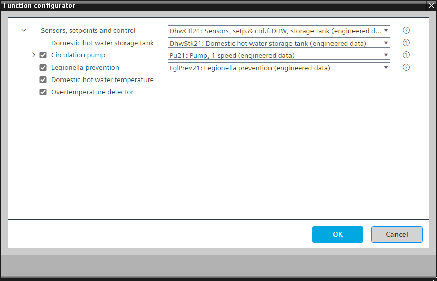

[DhwCtl21] 生活热水传感器、设定点和控制装置，带储水箱
Program block, name / node subtype: [DhwCtl21] Sensors, setpoints and control for domestic hot water, with storage tank
Library hierarchy: Heating equipment
Family: DhwCtl
项目树 | 图表 |
|---|---|
|
|
|


Configurator


程序块存储在没有 I/Os. 的库中 使用auto-create and auto-connect函数创建 I/Os 和 /or 将它们连接到接口块，例如 R_A、CMD_B。或者，从包含库中预定义 I/Os 的文件夹中取出 I/Os，并从工厂中取出 /or，并将它们连接到接口块。
控制生活热水储水箱充电状态。
该程序块具有以下可选功能：
Option: Circulation pump (1xBO, 4xBI)
控制泵 (Pu21)。循环泵定期开启和关闭，例如开启10分钟，关闭20分钟。
Option: Legionella prevention
用于热水系统中，防止军团菌生长或作为热消毒剂杀死军团菌 (LglPrev21)。
Option: Domestic hot water temperature (1xAI)
创建生活热水温度的模拟输入并读取其信号。
Option: Overtemperature detector (1xBI)
读取来自过热检测器的信号并生成警报。
姓名 | 描述 | 类型 | 报警/通知类 | 趋势/类型 | |
|---|---|---|---|---|---|
DhwStk | Domestic hot water storage tank | N/A | N/A | ||
姓名 | 描述 | 类型 | 报警/通知类 | 趋势/类型 | |
|---|---|---|---|---|---|
CirPu | Circulation pump | N/A | N/A | ||
LglPrev | Legionella prevention | N/A | N/A | ||
TDhw | Domestic hot water temperature | AI：模拟输入 | 是的，8 | 是的，2 | |
OvrTDet | Overtemperature detector | BI：二进制输入 | 是的，4 | No | |